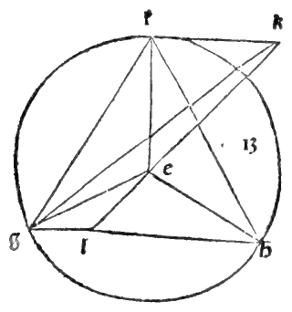
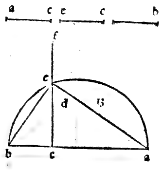

Chapter XXVII: How the Second Regular Body, Called the Exacedron or Cube, Is Formed in the Sphere¶
How the Second Regular Body, Called the Exacedron or Cube, Is Formed and Placed in the Sphere.

Following the order of Campanus in the thirteenth book (where the cube is placed as the fourteenth proposition, [XIII.15] in the Greek text), we now show how to form the second regular body, called the cubo or exacedron, which has six square faces, eight solid angles, and twelve equal edges ([XIII.15]).
Construction of the Cube in a Given Sphere ([XIII.15] [Campanus XIII.14])
Given the diameter of a sphere, to find the side of the cube inscribed in it, and to show that the square on the diameter of the sphere is triple (\(3 : 1\)) the square on the side of the cube.
Construction and Proof ([XIII.15], [VI.8], [III.31], [I.47], [XI.6], [XI.33])
Let \(ab\) be the diameter of the given sphere (see the marginal diagram
0033.g1.pngon Folio 0033), and divide \(ab\) at point \(c\) so that \(ac\) is double \(cb\) (\(ac = 2\,cb\), hence \(ab = 3\,cb\)).Describe the semicircle \(adb\) on diameter \(ab\), draw \(cd\) perpendicular to \(ab\) meeting the arc at \(d\), and join \(db\) and \(da\).
By the thirty-first of the third and the eighth of the sixth, in the right triangle \(adb\), \(ab : cb = db^{2} : cb^{2}\) and \(ab : db = db : cb\), so \(db^{2} = ab \cdot cb\). Since \(ab = 3\,cb\), the square on \(ab\) is triple the square on \(db\):
\[ab^{2} = 3\,db^{2}\]Now construct a cube whose side (edge) equals \(db\): form the square base \(efgh\) with each side equal to \(db\), erect four perpendiculars \(ek, fl, gm, hn\) of length \(db\) from the four corners of the base ([XI.12]), which are parallel to one another ([XI.6]), and join their upper extremities to complete the six square faces.
Draw the diagonal \(eg\) of the base square \(efgh\), and join the space diagonal \(en\) from the lower corner \(e\) to the opposite upper corner \(n\).
Because \(efgh\) is a square of side \(db\), by the penultimate of the first the square on the face diagonal \(eg\) is double the square on the edge (\(eg^{2} = ef^{2} + fg^{2} = 2\,db^{2}\)).
And because the vertical edge \(gn\) is perpendicular to the base plane, \(\angle egn\) is a right angle ([XI.Def.3]); hence in the right triangle \(egn\), the square on the space diagonal \(en\) equals \(eg^{2} + gn^{2} = 2\,db^{2} + db^{2} = 3\,db^{2}\).
Since we already proved in Step 3 that \(ab^{2} = 3\,db^{2}\), it follows that \(en^{2} = ab^{2}\), and therefore the space diagonal \(en\) of the cube equals the diameter \(ab\) of the sphere!
If a semicircle is described on the space diagonal \(en\) as diameter and revolved around \(en\), by the thirty-first of the third the semicircle passes through \(g\) and through every one of the eight right-angled vertices of the cube.
Thus the cube has been constructed and inscribed in the given sphere, and the square on the sphere’s diameter is triple (\(3 : 1\)) the square on the edge of the cube. For example, if the diameter of the sphere is \(6\) (whose square is \(36\)), the square on the side of the cube is one-third of \(36\), namely \(12\), and the side of the cube in length is \(\sqrt{12}\) (radice de 12), while the face diagonal is \(\sqrt{24}\) (equal to the edge of the tetracedron in the same sphere!).
Marginal Woodcut Diagrams (Paganini 1509)¶

Folio 0032 Diagram 3¶

Folio 0033 Diagram 1¶

Folio 0033 Diagram 2¶